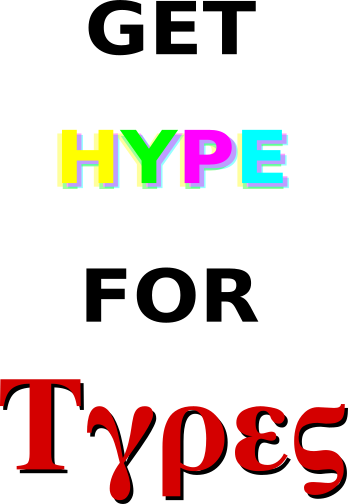

Thanks for your interest in Hype for Types! We hope you'll join us next semester and get hype for types! Below is some general info on the course. Also feel free to check out the main page of the course, where you'll see current lecture slides and assignments. If you have any other questions, feel free to contact the current instructors: Samson Rozansky (srozansk) and Shira Rubin (shirar). Thanks!
98-317 Hype for Types is a student-taught course ("StuCo") at CMU about type theory, logic, and the theory of programming languages. Hype for Types has been offered sixteen times (S18, F18, S19, F19, S20, F20, S21, F21, S22, F22, S23, F23, S24, F24, S25, S26).
As with all StuCos, any CMU student is eligible to enroll in Hype for Types. However, we'll assume you have a basic knowledge of functional programming and type theory, so you'll probably want to have taken 15-150 Principles of Functional Programming before taking Hype for Types. If you are unsure if you have enough of a background for HfT, let us know and we can help you figure out what you need to know!
The goal of Hype for Types is to make high-level concepts from type theory, theoretical computer science, and mathematical logic accessible to people with minimal backgrounds. Normally, you would have to take a bunch of difficult upper-level courses (and their prerequisites) in order to touch on this material, and even then you wouldn't get it all (we also cover some active research topics). If you don't want to put in years of difficult coursework in order to learn cool stuff about type theory, then Hype for Types is a great way to get a high-level overview without all the work and detail!
Also, if you've just been introduced to functional programming and type theory (e.g. you're a sophomore who's taken 150) and think you might be interested in studying something related to type theory, then Hype for Types is a great way to get a survey of some areas of interest before diving into specific courses. We do our best to cover a variety of topics -- from practical things you can use in your code right now (e.g. phantom types, category theory), to nifty new type theories (e.g. continuations, session types, dependent types), to mathematical underpinnings (e.g. logic, polymorphism, recursion schemes) -- so you can have a general idea what's out there. Based on which topics you find most/least interesting, we can recommend courses for you to take and learn more!
Not much. You're required to attend every lecture (1 hour/week), and submit weekly homework assignments (which are graded on effort, not correctness). Hype for Types will not be a significant burden on your schedule -- no matter how busy you are. In general, we have a very relaxed policy, to allow you to enjoy and benefit from Hype for Types as best as you can!
Hype for Types is taught by CMU students who have an interest in spreading knowledge about type theory. The current & former instructors for Hype for Types are all Sophomore/Junior/Senior/Master's students in CS, Math, and Logic, and we've all worked as teaching assistants for SCS courses (typically 15-150).
During registration, add 98-317 to your semester schedule. We sometimes have a waitlist for the course, but we can usually fit everyone in!